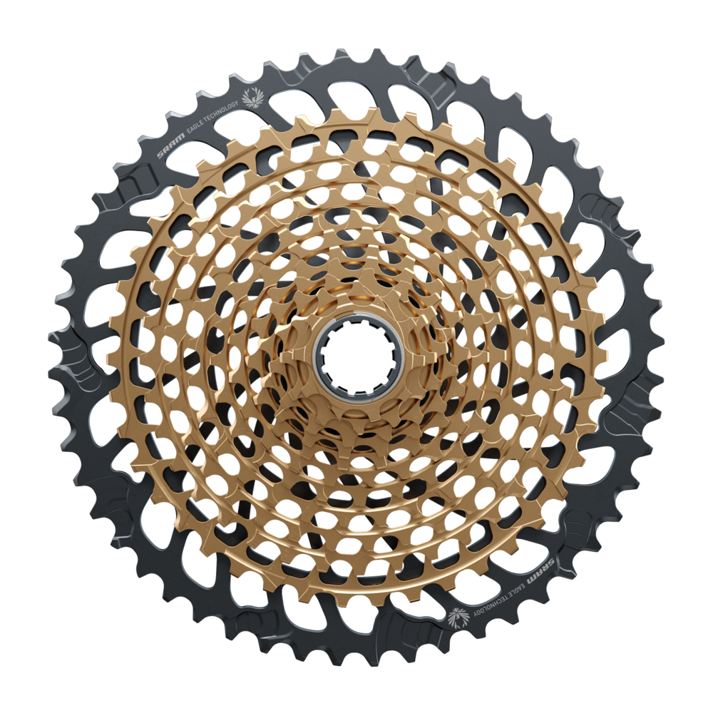

On a bicycle, the cassette or cluster is the set of multiple sprockets that attaches to the hub on the rear wheel. A cogset works with a rear derailleur to provide multiple gear ratios to the rider. Cassettes come in two varieties, freewheels or cassettes, of which cassettes are a newer development.